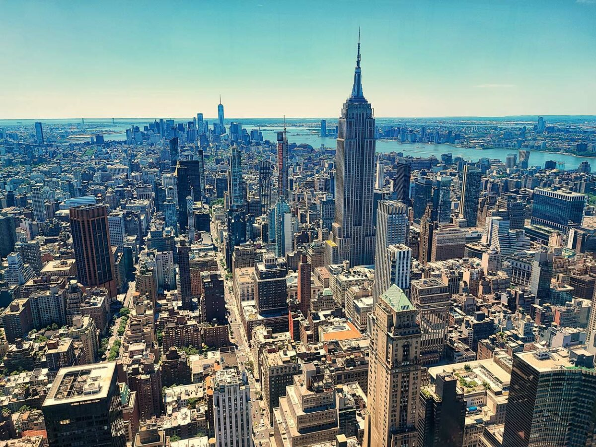
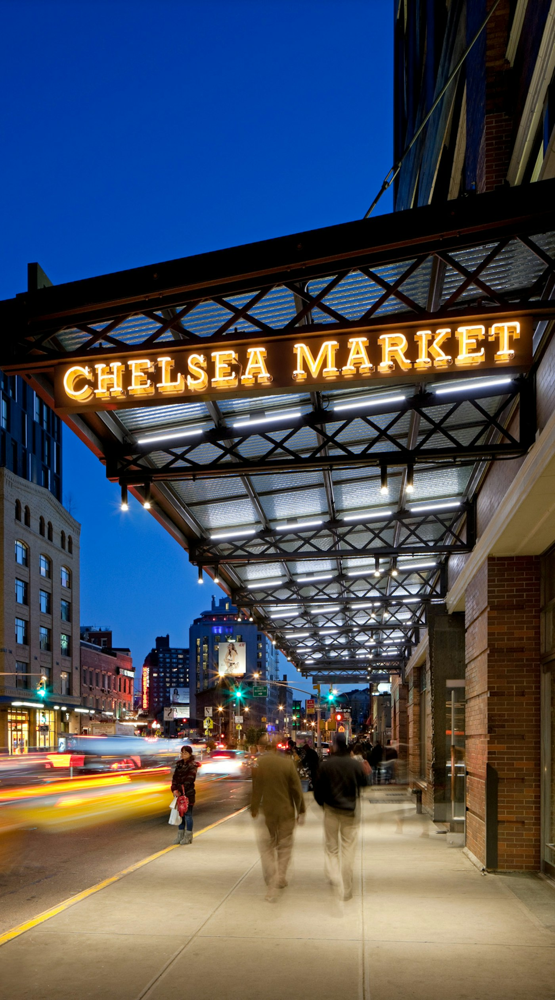
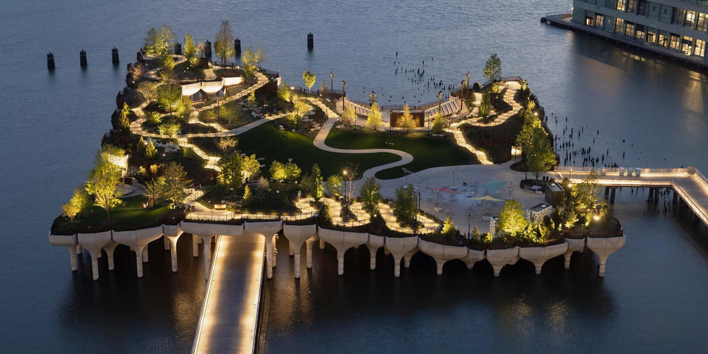
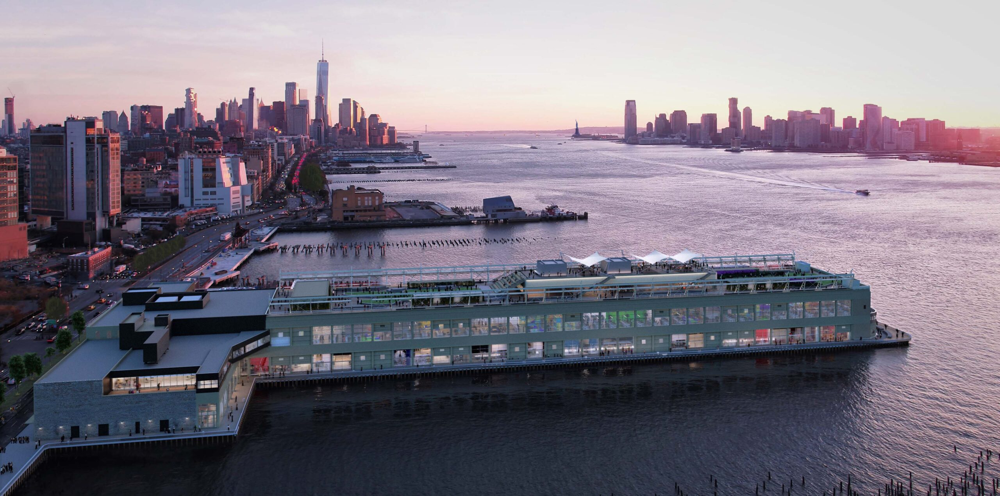
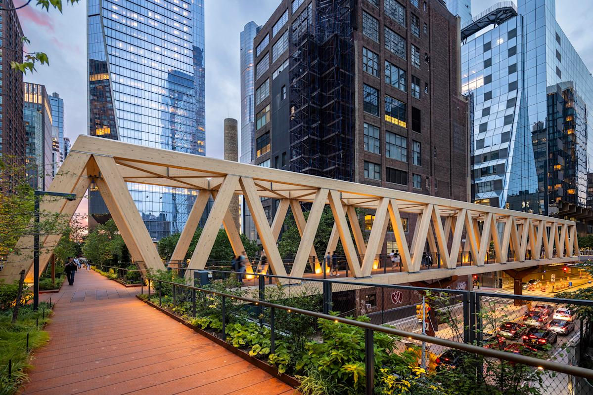
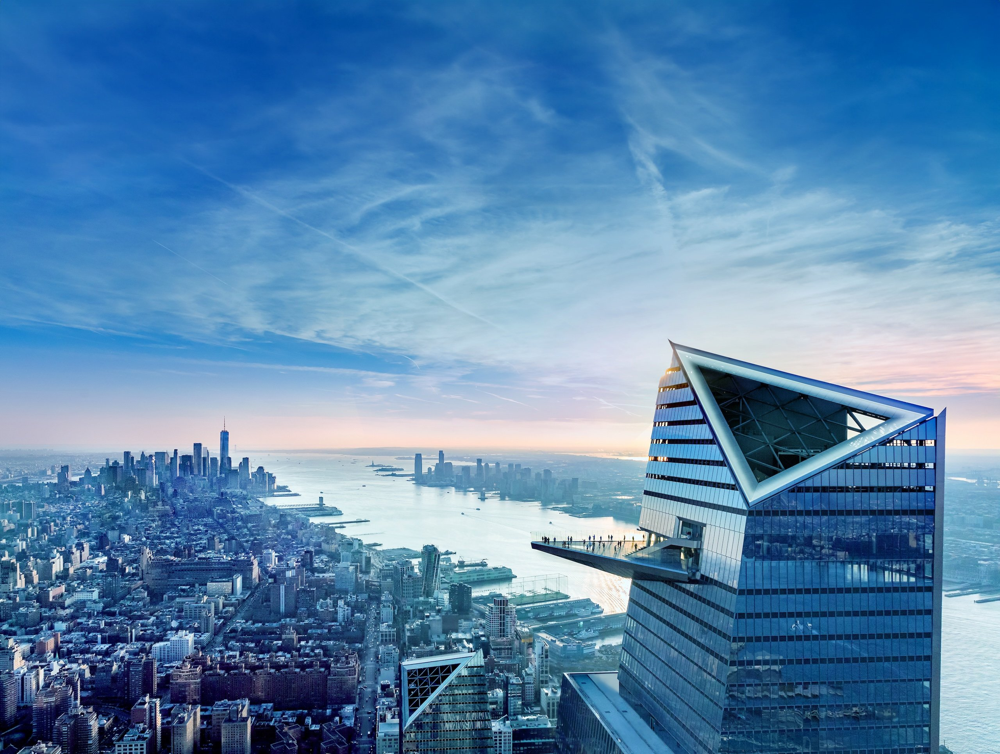
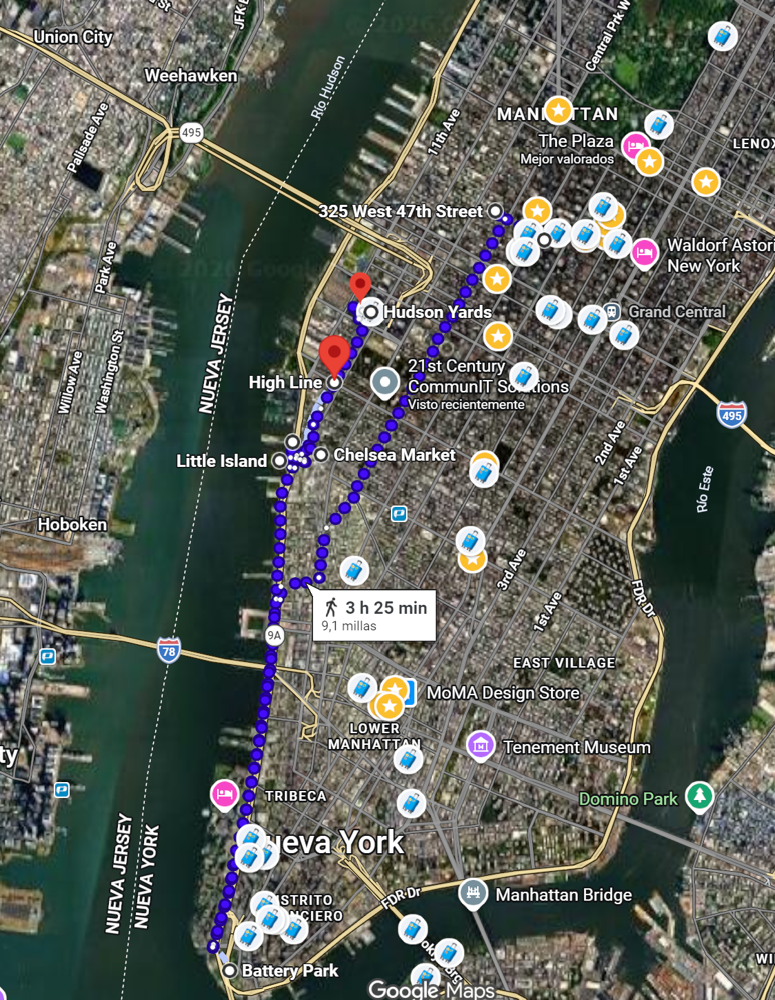

📅 Horario del día
Visita / Monumento
Comer / Beber
Desplazamiento
06:30 – 7:30
🏃 Posibilidad salir a correr
Opcional: salida matutina a correr antes del tour. Hay 1 km hasta Central Park.
07:30 – 08:45
☕ Desayuno
Deli, 7 Eleven o Matto Espresso — cafés express cerca del hotel.
08:45 – 12:15
🏙 Tour Alto y Bajo Manhattan (3h 30)
Excursión organizada por el Alto y Bajo Manhattan.
12:15 – 13:00
🌿 Battery Park
Ver Battery Park — interesa bastante. Buenas vistas y ambiente.
13:00 – 13:15
🚕 Taxi o Metro Battery Park → Chelsea Market
Taxi/Uber (15-20) o Metro (12) hasta Chelsea Market.
13:30 – 15:00
🍽 Comer en Chelsea Market
Tacos N°1, Very Fresh Noodles, Miznon… El edificio alberga las oficinas de Google. ¡Vale la pena pasear!
15:00 – 15:05
🚶🏻♂️➡️ Caminar Chelsea Market → Little Island
Caminar hasta Little Island.
15:05 – 16:00
🌳 Little Island (1h)
Parque flotante sobre el Hudson.
16:00 – 16:05
🚶🏻♂️➡️ Caminar Little Island → Pier 57
Caminar hasta Pier 57.
16:05 – 16:30
🛤 Pier 57
Pier 57 tiene rooftop gratuito con vistas al río.
16:30 – 17:00
🛤 High Line
Vieja vía de tren transformada en un parque. Seguir el camino hasta The Edge.
17:00 – 17:15
🚶🏻♂️➡️ Caminar High Line → The Edge
Caminar hasta The Edge.
17:15 – 18:15
🏗 Hudson Yards · The Vessel (1h)
The Vessel es la estructura metálica de Hudson Yards — entrada gratuita.
18:30 – 19:30
🔭 The Edge (18:40 o 19:00)
Observatorio con la plataforma de cristal más impresionante de NY. ¡Llegar un poco antes de la hora! Atardecer 19:53, la idea es verlo.
20:15 – 20:30
🚶🏻♂️➡️ Caminar The Edge → Madison Square Garden
Caminar hasta Madison Square Garden.
20:30 – 20:35
🏟️ Madison Square Garden
Estadio más impresionante de Nueva York.
20:35 – 20:40
🚶🏻♂️➡️ Caminar Madison Square Garden → Cafetería Andrews
Ir a cenar.
20:40 – 22:00
🍽 Cafetería Andrews
Cena en Cafetería Andrews (cierra a las 23h)
22:00 – 22:15
🚶🏻♂️➡️ Cafetería Andrews → Hotel
Volver al hotel.
22:15 – 00:00
🏨 Hotel
Llegada al hotel, a descansar y cargar pilas para el día siguiente.
Ruta en Google Maps
🗺️ Abrir ruta 1 en Maps 🗺️ Abrir ruta 2 en Maps